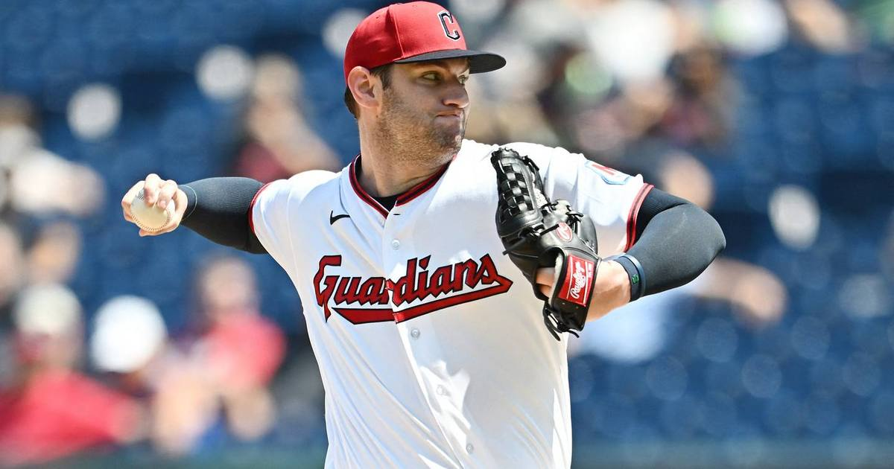

Guardians finish 0-2 comeback, shut out White Sox 2-0 to reach ALCS
Down 0-2 in the ALDS, Cleveland won three straight — capped by Gavin Williams' 12-strikeout gem in a 2-0 Game 5 shutout — and heads to Tampa for the ALCS on Monday.

Disclosure: this post contains affiliate links. I earn a commission on qualifying purchases.
The comeback
The Guardians blanked the White Sox 2-0 in Saturday's winner-take-all Game 5 at Progressive Field, finishing off a comeback from 0-2 down to take the ALDS 3-2.
Teams that fall behind 0-2 in a best-of-five almost never survive. Cleveland's comeback is just the 11th 0-2 comeback in MLB history — and the first since 2017.
Before first pitch, Cleveland's lineup call drew attention: Gavin Williams got the ball against Chicago's Sean Burke at 8:08 ET, and Petey Halpin earned the nod in center field after Ángel Martínez went 0-for-15 in the series. Williams made every bit of that trust look justified.
(USA Today highlights, ClutchPoints on the Game 5 lineup)
Williams' night
Gavin Williams tied Cleveland's postseason record with 12 strikeouts across 5 2/3 scoreless innings (theScore).
Williams' strikeouts: 12 (ties Cleveland postseason record)
Williams' innings: 5 2/3 scoreless
Team strikeouts: 21 (nine-inning postseason record)
The White Sox didn't threaten again after Chicago's bats went silent — the 2-0 scoreline held, and the Guardians' pitching staff wrote the whole story in one night.
Ramírez finished the series on fire
José Ramírez carried the offense when it mattered most. Over the final three games of the ALDS, he went 5-for-12 with 2 home runs and 7 RBIs — the production engine of a comeback that had no room for a cold bat.
What's next
• ALCS Game 1: Monday, October 12
• Where: at Tampa, against the Rays
Three wins in a row, a historic comeback, a record-setting staff night — and now the American League pennant on the line.
Watch
Source: WHITE SOX vs. GUARDIANS: ALDS Full Game 5 Highlights (October 10) | 2026 MLB Postseason, MLB on YouTube. Full Game 5 highlights from 10/10/26, including the record-setting pitching performance.
Gear up: Guardians jerseys / playoff gear → [Fanatics](https://fanatics.93n6tx.net/WOLjqe) via Fanatics